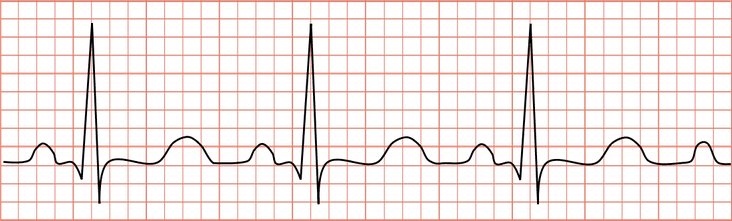

Mỗi câu có 4 phương án, chỉ chọn một đáp án đúng (0,25 điểm).
1
Thông hiểu
Một vật dao động điều hòa với phương trình $x=-5\mathrm{cos}\left( 4\pi t\right)$(cm). Biên độ và pha ban đầu của dao động lần lượt là
2
Thông hiểu
Một chất điểm dao động điều hòa với phương trình li độ $x=2\mathrm{cos}\left( 2\pi t+\frac{\pi}{2}\right)$ (x tính bằng cm, t tính bằng s). Tại thời điểm $t=\frac{1}{4}$s chất điểm có li độ bằng
3
Thông hiểu
Một vật chuyển động tròn đều với tốc độ góc là $\pi$ rad/s. Hình chiếu của vật trên một đường kính dao động điều hòa với tần số góc, chu kì và tần số bằng bao nhiêu ?
4
Thông hiểu
Một chất điểm dao động điều hòa với phương trình $x=5\mathrm{cos}\left( 10\pi t+\frac{\pi}{3}\right)$(cm). Li độ của vật khi pha dao động bằng $\left( \pi\right)$là
5
Thông hiểu
Vật dao động điều hòa với biên độ, tần số và pha ban đầu lần lượt là $A$, $f$, $\varphi$. Đại lượng luôn dương trong ba đại lượng trên là
6
Thông hiểu
Phương trình của một dao động điều hòa có dạng $x=-A\cos\omega t$. Pha ban đầu của dao động là
7
Thông hiểu
Một vật chuyển động tròn đều với tốc độ góc là $\pi$ rad/s. Hình chiếu của vật trên một đường kính dao động điều hòa với tần số góc, chu kì và tần số bằng bao nhiêu?
8
Thông hiểu
Một chất điểm dao động điều hòa với phương trình $x=5\cos\left(10\pi t+\dfrac{\pi}{3}\right)$ (cm). Li độ của vật khi pha dao động bằng $\pi$ là
9
Thông hiểu
Một vật dao động điều hòa có phương trình $x = 2\cos(2\pi t - \pi/6)$ cm. Li độ của vật tại thời điểm $t = 0{,}25$ s là
10
Thông hiểu
Một chất điểm dao động có phương trình $x=6\cos(\pi t)$ ($x$ tính bằng cm; $t$ tính bằng giây). Phát biểu nào sau đây là đúng?
11
Thông hiểu
Một vật dao động theo phương trình $x=5\cos(\pi t-\frac{\pi}{3})$ cm. Vào thời điểm nào thì pha dao động đạt giá trị $\frac{\pi}{2}$ rad, lúc ấy li độ $x$ là:
12
Vận dụng

Tim co bóp theo nhịp đo được điều khiển bằng một hệ thống các xung điện dẫn truyền trong cơ tim. Máy điện tim ghi nhận những xung điện này và hiển thị dưới dạng đường điện tâm đồ. Đó là những đường gấp khúc, lên xuống biến thiên theo nhịp co bóp của tim. Hình bên là một hình ảnh điện tâm đồ thu được từ một máy điện tim. Biết rằng mỗi khoảng vuông (theo chiều ngang) tương ứng với khoảng thời gian 0,05 s. Số nhịp tim trung bình trong 1 phút ứng với giá trị nào sau đây.
13
Vận dụng
Một chất điểm dao động điều hòa trong 10 dao động toàn phần đi được quãng đường 120 cm. Quỹ đạo của dao động có chiều dài là
14
Vận dụng
Một chất điểm dao động điều hòa có chu kì $T = 2$ s. Tần số góc $\omega$ của dao động là
15
Vận dụng
Một chất điểm dao động điều hòa có tần số góc $\omega = 20\pi$ (rad/s). Tần số của dao động là
16
Vận dụng
Một chất điểm dao động điều hòa, trong thời gian 0,5 phút vật thực hiện được 15 dao động. Chu kì dao động của vật là
17
Vận dụng
Một chất điểm dao động điều hòa có phương trình li độ theo thời gian là: $x=5\sqrt{3}\cos(10\pi t+\frac{\pi}{3})$ (cm). Chu kì của dao động là